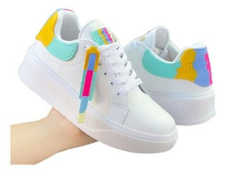

El estilo es el conjunto de rasgos y características que definen una moda, haciéndola así personal y peculiar, diferenciándola de otros. Su rol es importante porque a través de sus conocimientos y creatividad puede imaginar, diseñar y producir productos que cumplen dos fines: Vestir a las personas, protegerlas de las inclemencias del tiempo y los riesgos del entorno.
La moda (del francés mode y del latín modus ‘modo, medida’)[1] es un conjunto de prendas de vestir, adornos y complementos basados en gustos, usos y costumbres que se utilizan por una mayoría durante un periodo de tiempo determinado y que marcarán tendencia según la duración del mismo; aunque también la moda se refiere a algo que se repite muchas veces, en este caso, las prendas de vestir. Las tendencias las patrocinan, las llevan a conocer influencers o influencias para tí. La moda requiere tu propio estilo, destacar entre los demas con la ropa de forma estilosa.
Moda urbana
El término moda urbana se utiliza para denominar al tipo de vestimenta que se usa en el día a día. La moda urbana está pensada en términos de comodidad y resistencia para el continuo uso y movimiento dentro de la ciudad.
Se considera también que la moda urbana tiene su origen en las calles, los barrios e incluso la periferia de una ciudad. Este estilo de vestimenta se inspira, generalmente, en tribus urbanas o movidas musicales que se encuentran en auge al momento. El hip hop es un gran exponente en cuanto a moda urbana se refiere.
La moda se considera algo impuesto y creado por los diseñadores de alta costura. La moda urbana, en cambio, nace en las calles, en el vestir cotidiano de la gente. Luego los diseñadores imitan o modifican esas tendencias para sacarlas al mercado.
La moda urbana es una forma de expresión cultural.
La moda urbana se caracteriza por ser todo lo opuesto a la alta moda, a la vez que forma parte de la identidad de aquellos que la generaron. Esta tendencia es fruto de la comunidad y el momento histórico que la ven nacer. Es un reflejo de la movida underground de una ciudad.
Este estilo de vestir intenta combinar diferentes expresiones y gustos cotidianos. Por lo que sus fuentes de inspiración suelen encontrarse entre deportistas famosos, artistas locales o jóvenes estilosos que andan por las zonas más populares de la ciudad.
Una vez que la moda urbana empieza a cobrar mayor notoriedad, la industria comercial no pierde el tiempo. Empieza a adaptarla e imitarla con el fin de comercializarla en masa. Es en ese momento cuando la moda urbana pierde su originalidad y deja de reflejar al movimiento underground que la creó.